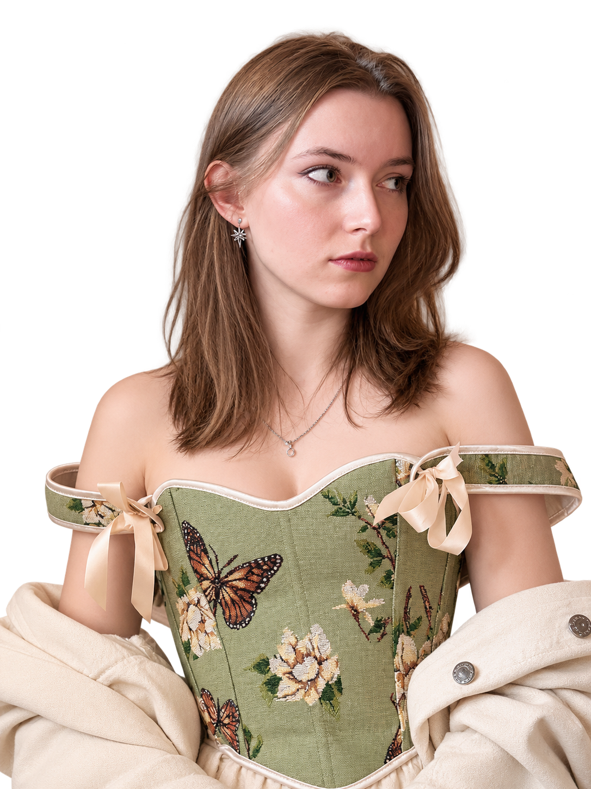
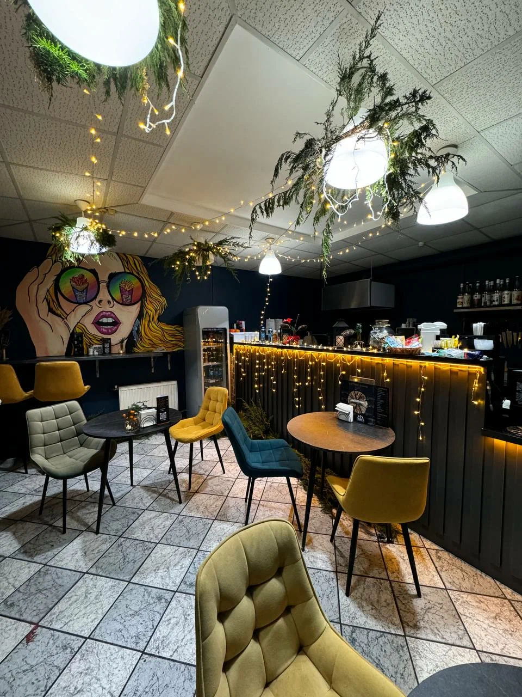
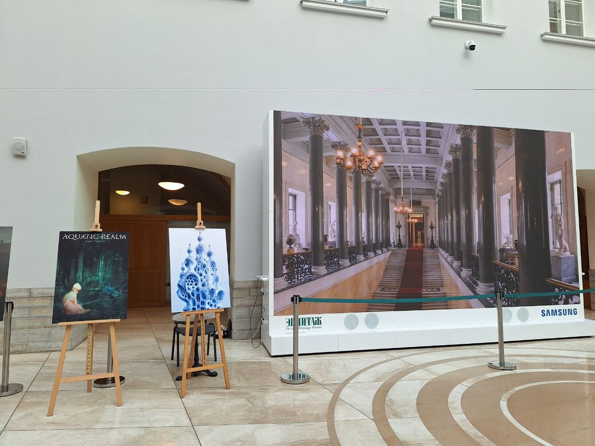
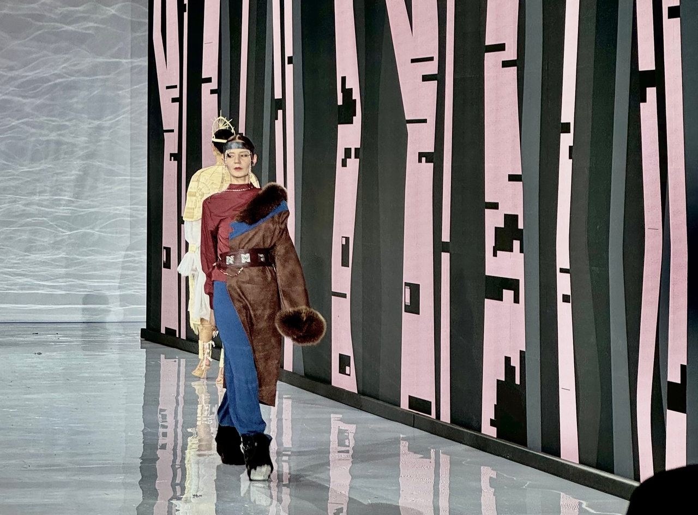
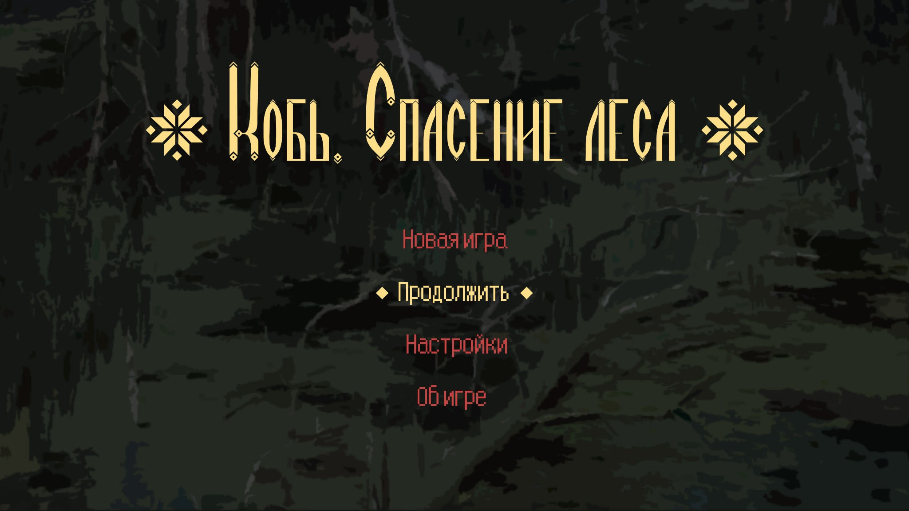

Художественная школа
Окончила художественную школу. Академическая база, композиция, рисунок и цвет.

Прикладная информатика в дизайне
Смотреть проекты ↗Привет! Я Александра Попова, мой творческий псевдоним — kelan.
Учусь на направлении «Прикладная информатика в дизайне». Мне интересно соединять художественное мышление с цифровыми технологиями, создавать выразительные визуальные решения и функциональные проекты.
Работала над реальными проектами, выступала перед аудиторией и защищала свои идеи. Постоянно развиваюсь в дизайне, иллюстрации, анимации и 3D.
Окончила художественную школу. Академическая база, композиция, рисунок и цвет.
Окончила Яндекс Лицей. Опыт изучения программирования и цифровых технологий.
Завершаю обучение по направлению «Прикладная информатика в дизайне».
Программы, в которых я работаю:
Избранные проекты в области графического дизайна и мультимедиа.

Разработка визуальной концепции и печатных материалов.
Подробнее о проекте
Серия плакатов в коллажной технике.
Подробнее о проекте
Анимация для показа театрального костюма — от идеи до реализации.
Подробнее о проекте
Визуальная концепция игры по мотивам славянского фольклора.
Подробнее о проектеВ этой категории пока нет работ.
Подборка моих авторских рисунков и иллюстраций. Каждая работа отображается полностью, без обрезки.
Открыта к интересным идеям, творческим знакомствам и сотрудничеству.
Я на связи в Telegram и TikTok — переходите по ссылкам, чтобы связаться со мной.
Мои страницы в социальных сетях: